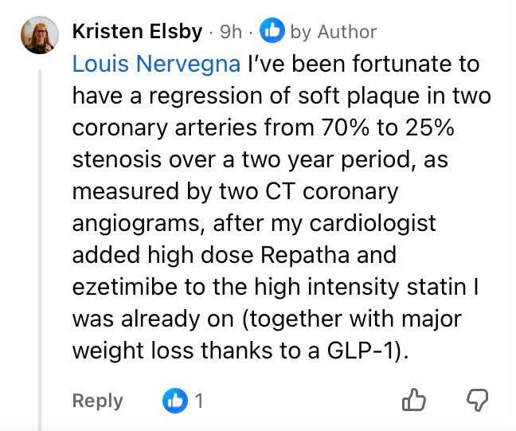

Member's paired CT angiograms show major plaque reversal, same machine and radiologist
Louis shares a group member's before-and-after coronary CT angiogram images, with the note that both scans used the same machine and radiologist, in response to a surgeon's claim that no medical therapy can clean out arteries.